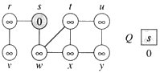
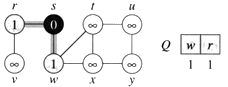
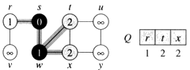
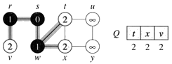
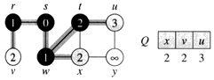
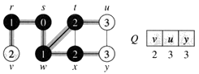
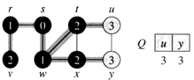
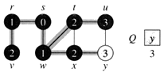
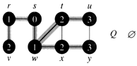

Breadth First Search
The Breadth First Search algorithm uses a queue data structure to store intermediate results as it traverses the graph, as follows:
- Enqueue the root node
- Dequeue a node and examine it
- If the element sought is found in this node, quit the search and return a result.
- Otherwise enqueue any successors (the direct child nodes) that have not yet been discovered.
- If the queue is empty, every node on the graph has been examined – quit the search and return "not found".
- If the queue is not empty, repeat from Step 2.

Example
|  | After initialization (paint every vertex white, set d[u] to infinity for each vertex u, and set the parent of every vertex to be NIL), the source vertex is discovered. initialize Q to contain just the source vertex s. |
|  | The algorithm discovers all vertices 1 edge from s i.e., discovered all vertices (w and r) |
|  | |
|  | The algorithm discovers all vertices 2 edges from s i.e., discovered all vertices (t, x, and v) |
|  | |
|  | |
|  | The algorithm discovers all vertices 3 edges from s i.e., discovered all vertices (u and y) |
|  | |
|  | The algorithm terminates when every vertex has been fully explored. |
Pseudo Code
BFS(G, s)
for each vertex u in V[G]-{s}
color[u] = WHITE
d[u] = INF
pi[u] = NIL
color[s] = GRAY
d[s] = 0
pi[s] = NIL
Queue.push(s)
while Queue.empty()==false
u = Queue.pop()
for each v in Adj[u]
if color[v] = WHITE
color[v] = GRAY
d[v] = d[u] + 1
pi[v] = u
Queue.push(v)
color[u] = BLACK
Time Complexity
The time complexity can be expressed as O(|V|+|E|).